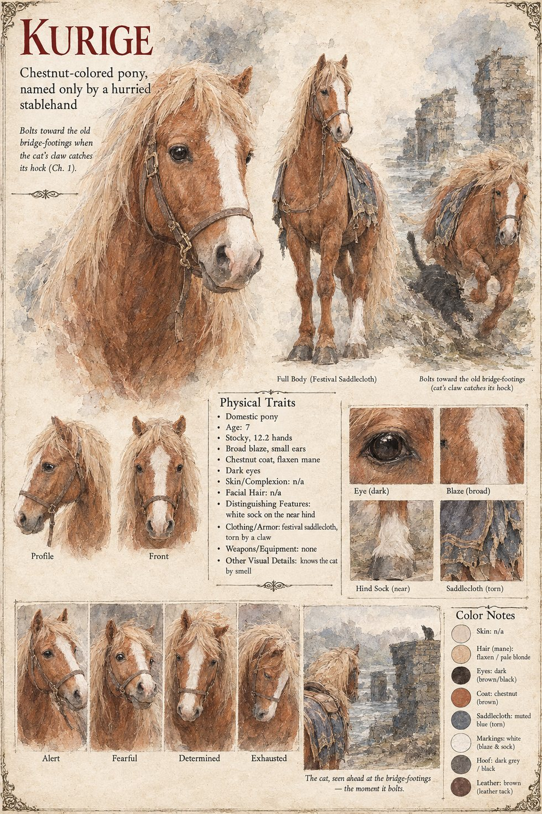

Kurige
Chestnut pony of the Festival of the Small Bow · named only by a stablehand in a hurry · 7 years old by his sheet
A chestnut pony whose name means only “chestnut-colored,” conferred by a stablehand in a hurry. On the twelfth of Eldren, on the meadow below the Shirase River, he carries the Minister of the Left's nine-year-old grandson at a walk and then a canter for the Festival's short course, while a hundred and twenty paces off the boy's teacher watches with his hands in his sleeves. A small russet cat who knows his smell leaps for the saddlecloth, misses, and catches his hock.
He does not bolt toward the awnings, or toward the river with its water to stop him; he bolts on a diagonal toward the stone footings of the old bridge, which takes him four seconds. The boy goes over his shoulder with an arrow still in his hand. Afterward a patient Examiner finds a scrap of his chestnut hair in the grass at the starting line, with three tufts of russet fur beside it. The sheet's seven years and its white sock are its own; the manuscript gives him only his name, his colour, and the four seconds.
Appears In

Related Subjects


Related Records

A half-breath late to the starting line, Azuki has the pony's hock, Kurige bolts across the meadow with Kiyomaro in the saddle, and Tomobe no Higaide, forty paces off, begins to run.